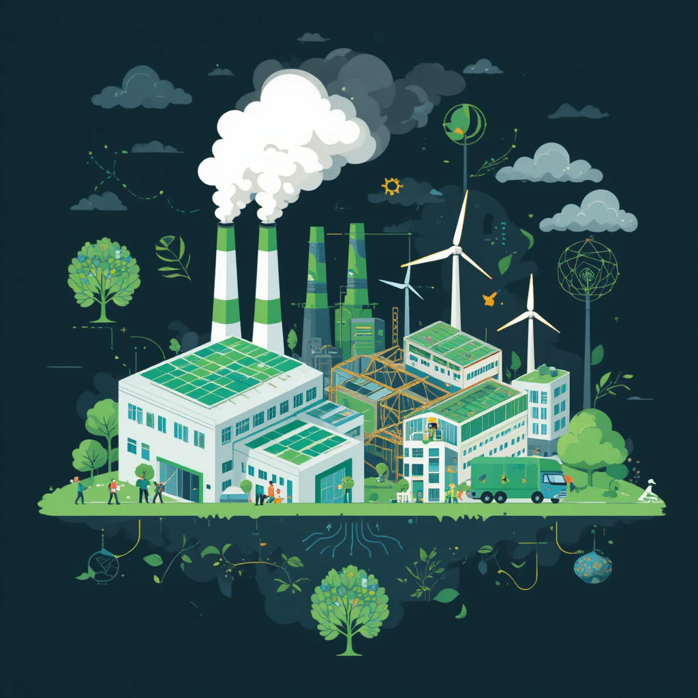

Estrategias sostenibles en nuestro sector productivo
Las estrategias sostenibles en el sector productivo buscan equilibrar el crecimiento económico con la responsabilidad ambiental y social. Estas estrategias incluyen prácticas que minimizan el impacto ecológico, optimizan el uso de recursos y promueven la eficiencia energética
